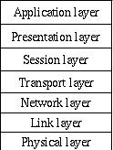

MidWay
Midway fits in the larger picture as an implementation of the session layer in the OSI presentation model.

It is this statelessness that makes it scalable. The CORBA camp has come to the conclusion that while CORBA does what it was intended to do, it scales poorly. A function passing TP monitor is the tested and tried, it scales, and since html/CGI is also stateless, it integrates better to web solutions.
Another side of the story is that I do not believe in reusable objects. The reason is stated in Eggestad law of reusable code: "The reusability of code is inversely proportional to the code complexity." Since objects are more complex than functions, they are less reusable.
Another problem with communication between objects are their need for increased intercommunication. If you trying to run your applikcation over a WAN, the latecy will kill you.
Always keep in mind that the principle design criteria for MidWay is speed and throughput.